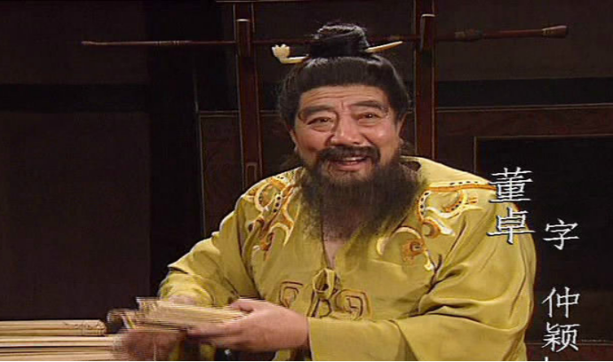

《三国演义》中此人战胜过曹操孙坚，比吕布和华雄都厉害，最终却被埋没
话说在东汉末年三国时期，因为大魔王董卓进京霍乱大汉朝廷，使大汉集团高层人员，终日不得安生，下面的底层员工生活更加艰苦，因此各地的诸侯总经理扛把子，带领小弟集合到一块儿，要把大魔王打倒拉他下台，让自己坐上去。从此故事就开始了，他有很多的主角，比如说刘皇叔，仁义忠心的关二爷，还有他的三弟，在电视和书上的《三国演义》中，还有一个特别能打的吕布，这些人在历史上确实都有的，但是有些事情事迹在历史上没有的，比如说，各路诸侯扛把子在他们讨伐大魔王时，有一位战功赫赫的人是最主要的，而在三国演义中却没有提起，或者只是一笔带过，而我们在电视上看的三国演义，他不是真正的历史，他是有观赏性和针对性的一个戏剧。今天就要讲讲这个被埋没的人徐荣。
徐荣大家都不太了解，也许有人连听都没有听过这个名字，只知道刘关张和曹操等等，而之所以说徐荣不太出名，就是因为在后世的传记中很少有记载他的事迹的，就连最出名的三国志，也都是只言片语的，微微提起了一下，他的事迹战功在史书中很少记载，而最让人崩溃的就是，他们出生的地方都没有明确的写出来，或者记载着，而从流传下来的其他的资料中可以从中查的出来，而从其他资料中可以看出，徐荣对讨伐大魔王的战斗中有着举足轻重的关键作用，是非常关键的人物。

在三国志记载公孙度的一段话是这样写的，说公孙度之所以能在辽东当上太守就是因为经过我们的主角徐荣介绍，和推荐的。而他跟公孙度是老乡，上面记载着说公孙度是辽东一个叫襄平的地方，而从这就可以看出，我们的主角徐荣，肯定也是那个地方的。都是襄平，辽东的人。其实细说的话，他们可能还是从小一块玩到大的。他们都应该属于幽州人。
大家都知道大魔王董卓的军队里面大部分都是蛮夷能骑会射箭，的特殊兵马，而地方大部分都是凉州地区和并州两个地方的人，而当时我们的主角是属于幽州这个地方的，而他却在大魔王手下，职位还不低，是一位非常关键的人物，是深得大魔王信赖的人，可以说是亲信的其中一人，身居要职，所以他在讨伐大魔王的战争中，有着不可磨灭的功劳，他也起了非常大的作用，我们来具体看一下。
第一在一个记载大魔王董卓的书中是这样写的，说三国里面的一个叫孙坚的，他带着自己的兵马小弟，向一个叫做梁县的地方东面展开了攻击，他要把正在向南行军的大魔王军队打败，而这时候我们的主角正在和另一位将领带着自己的小弟们，也正在向那个叫梁县的地方前进，而准备突袭孙坚和他带领的小弟们，双方就这样，不约而同的见面了，他们的战斗就这样打响了，而孙坚实力不行，被我们的主角战败，只能带着自己的十来个兄弟逃跑了，这时候我们的主角在马上追上他的时候，那个狡猾的孙坚，把自己头上的帽子竟然给了别的小弟让他带着假扮自己，而自己从另一个方向逃跑了，而当我们的主角大军追上那个假冒的人时才发现已经追不上他了，他已经跑了。而他在我们主角的手里算是捡了条命。
小编认为:第二就是在武帝纪记载的一个事情了，在公元190年那时候的曹阿瞒还只是一个小公司的头头，他带着自己的一帮小弟们，从一个叫酸枣的地方出发，进进攻某地，而那时候我们的主角还在大魔王手底下，而他的大军正好也在某地那里，当时曹阿瞒带着他的小弟跟我们的主角和他的一群小弟，在一条名为汴水的河岸上就这么开始开战了，等你开战的时候结果已经注定了，曹阿瞒当时的几名大将都被我们的主角大军战败战死，就连曹阿瞒本人都中箭受伤，差点没掏出来，可以说他的军队是损失重大，最后又回到了自己的原处。在他们的这两场战斗中，如果说那时候的曹阿瞒和他的众多小弟战斗力还不是太高，属于新兵，我们的主角赢了他属于正常，而跟孙坚这场战斗的话是真正的属于强者之间的较量，赢得漂亮，是显示出我们主角是有真正的才华的！